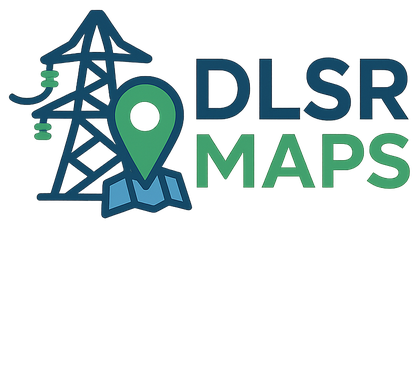

Búsqueda por placa
Busque por referencia completa, parcial o solo por número.
← Inicio
⌕
General
Solo número
🔎 Buscar
Limpiar
Listo para buscar.
Mapa listo
Realice una búsqueda para visualizar la ubicación.